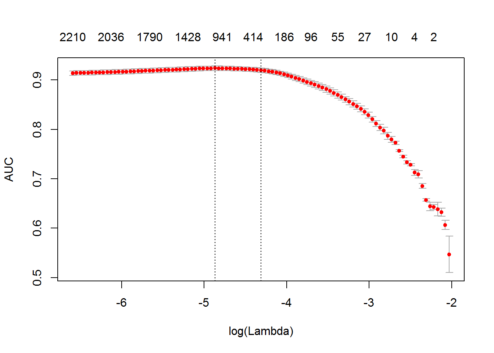
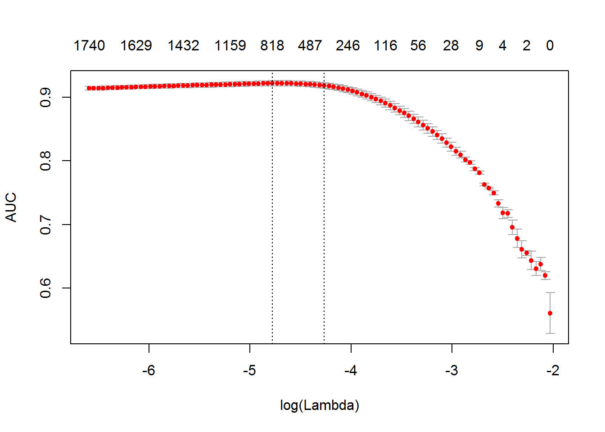
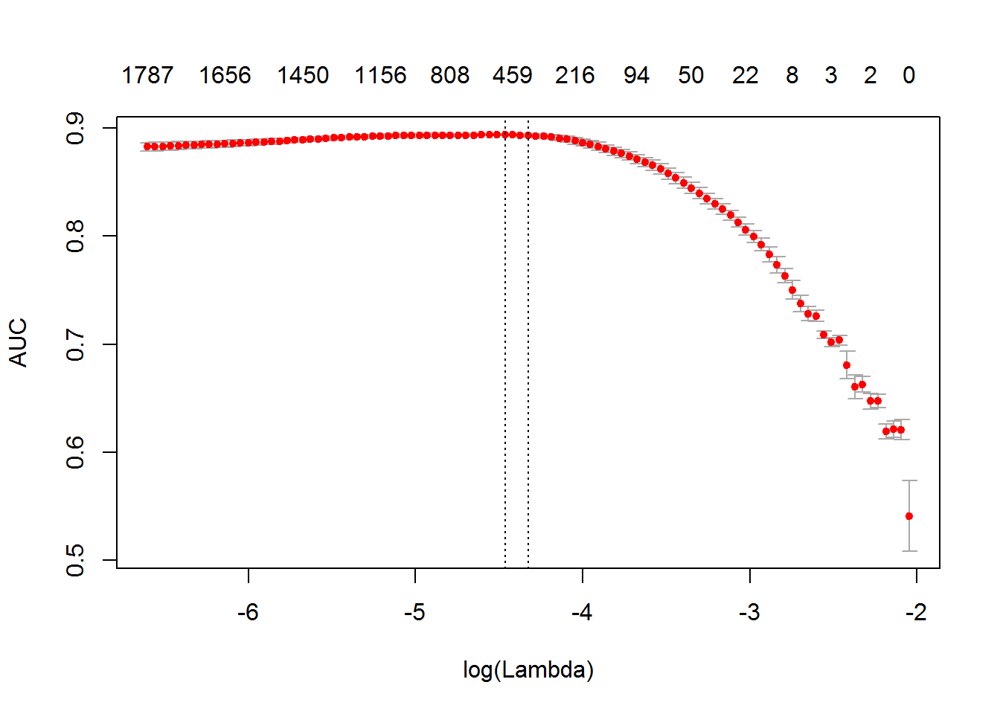
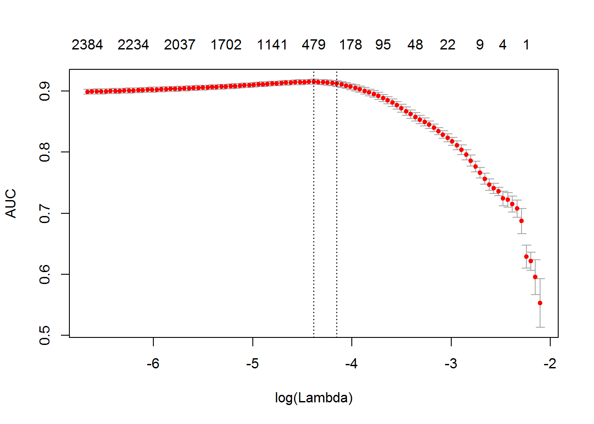

2 文本分析的一般步骤
大多数文本挖掘和自然语言处理（NLP）建模使用词袋或n-gram的方法。尽管这些模型很简单，但它们通常表现出良好的文本归类和分类性能。它们在理论上看起来是这样简洁，在实践上它们又那么有效。只是真的要我们用软件实现起来，这似乎又不那么简单了。R语言由于它的copy-on-modify特性因而显得特别明显。
让我们先简要回顾一下一个典型的文本分析过程中的若干步骤：
- 研究者首先用从它们的要分析的文档中构造一个文档-词矩阵阵(DTM)或者“词共现矩阵”(TCM)。换句话说，第一步要进行文本的向量化——建立一个词项或n-gram到向量空间（vector space）的映射。
- 研究者在DTM使用各种模型。这些模型可能包括文本分类，主题模型，相似性匹配等等。拟合模型也少不了调整和验证。
- 最后，研究者把模型运用到新的数据上。
在这个小教程中，我们将主要讨论第一步。文本本身会占用大量的内存，但向量化后的文本通常不会这样，因为它们被存储在了稀疏矩阵中。但由于R的copy-on-modify特性，我们是很难用交互的方法来构造一个DTM的。因此，哪怕只是对一个很小的文本集构造DTM，对分析师和研究人员来说也是一个严重的瓶颈。创建DTM时需要把整个文本集读取到RAM中，并将其视为一个单独的向量，这样做往往会增加2到4倍的内存使用量。text2vec包提供了一个更好的构造DTM的方法，顺利地解决了这个问题。
2.1 实例
让我们将它应用到一个真实的案例中。我们来做一次情感分析，来看看这个核心功能是如何发挥作用的。
text2vec包提供了movie_review数据集。它由5000电影评论组成，其中的每一部电影都有情感正负标记。我们也将使用data.table包数据处理。
首先，让我们把数据集分成两部分——训练集和测试集。我们将展示如何在训练集上进行数据操作，然后在测试集进行完全相同的操作：
library(text2vec)
library(data.table)
data("movie_review")
setDT(movie_review)
setkey(movie_review, id)
set.seed(2016L)
all_ids = movie_review$id
train_ids = sample(all_ids, 4000)
test_ids = setdiff(all_ids, train_ids)
train = movie_review[J(train_ids)]
test = movie_review[J(test_ids)]2.1.1 向量化
为了将文档表示到一个向量空间中，我们首先必须创建由词项（term）到词项索引的映射。我们称它们为词项（term），而不是单词（word），因为它们也可以各种n-gram、短语而不仅限于单词。我们将一组文档处理为稀疏矩阵，其中每一行对应一个文档，每列对应一个词项。这可以通过两种方式来完成：使用的词项本身或特征哈希 。
2.1.1.1 基于词汇的向量化
让我们先创建一个基于词汇的DTM。在这里，我们统计文档中所有的词汇，建立一个词典，并为每一的词汇设定唯一的ID。我们使用create_vocabulary()函数来达成这个目的。通过create_vocabulary()函数，我们将建立一个迭代器，它将建立这个所需的词汇表。
# 定义预处理函数和分词函数
prep_fun = tolower
tok_fun = word_tokenizer
it_train = itoken(train$review,
preprocessor = prep_fun,
tokenizer = tok_fun,
ids = train$id,
progressbar = FALSE)
vocab = create_vocabulary(it_train)这儿干了啥？
我们用
itoken()函数创建了一个迭代器。所有前缀为create_的函数都是与迭代器的工作有关的。R用户可能会发现这个语法有些奇怪，迭代器这个东西看似抽象，但却能让我们隐藏大多数与输入数据输入和处理（以节约内存的方式）的代码块。我们用
create_vocabulary()函数建立了一个词汇表。
另外，我们可以先创建词汇的列表（R语言中的list元素），并在接下来的步骤中重复利用。这个list中的每个元素应当代表一个文档，每个子元素应该是这个文档的词的文本向量（已经分好词）。
train_tokens = train$review %>%
prep_fun %>%
tok_fun
it_train = itoken(train_tokens,
ids = train$id,
# 关闭进度条，因为在Rmarkdown里面它似乎有些问题
progressbar = FALSE)
vocab = create_vocabulary(it_train)
vocab## Number of docs: 4000
## 0 stopwords: ...
## ngram_min = 1; ngram_max = 1
## Vocabulary:
## terms terms_counts doc_counts
## 1: ducking 1 1
## 2: casket 1 1
## 3: overturned 1 1
## 4: vachon 1 1
## 5: michonoku 1 1
## ---
## 35592: unfortuntly 1 1
## 35593: visor 2 1
## 35594: evaluation 1 1
## 35595: briant 1 1
## 35596: recluses 1 1需要注意的是text2vec提供了一些分词函数（输入?tokenizers)。不过这些分词函数只是基于base::gsub()函数写的，效率不高也不够灵活。如果你对灵活性和效率有更高的要求的话，可以使用tokenizers包，它涵盖了大多数的用例。你也可以使用stringi包编写自己的分词函数。
现在，我们有一个词汇表了，我们可以构建一个DTM了。
vectorizer = vocab_vectorizer(vocab)
t1 = Sys.time()
dtm_train = create_dtm(it_train, vectorizer)
print(difftime(Sys.time(), t1, units = 'sec'))## Time difference of 1.184694 secs现在我们得到了一个DTM，并能查看其大小。
dim(dtm_train)## [1] 4000 35596identical(rownames(dtm_train), train$id)## [1] TRUE如你所见，这个DTM有4000行，恰好等于文档的数量；35596列，这正是词汇表里词汇的数量。
一切就绪，让我们来拟合第一个模型。这里我们将使用glmnet包，来拟合以一个逻辑回归模型，并使用L1惩罚和5折交叉验证。
library(glmnet)
NFOLDS = 4
t1 = Sys.time()
glmnet_classifier = cv.glmnet(x = dtm_train, y = train[['sentiment']],
family = 'binomial',
# L1惩罚
alpha = 1,
# interested in the area under ROC curve
type.measure = "auc",
# 5-fold cross-validation
nfolds = NFOLDS,
# high value is less accurate, but has faster training
thresh = 1e-3,
# again lower number of iterations for faster training
maxit = 1e3)
print(difftime(Sys.time(), t1, units = 'sec'))## Time difference of 4.235329 secsplot(glmnet_classifier)
print(paste("max AUC =", round(max(glmnet_classifier$cvm), 4)))## [1] "max AUC = 0.9236"我们已经成功地在DTM上拟合了模型。现在，我们可以检查模型在测试集上的性能。注意，我们使用了和之前完全相同的函数进行预处理和分词操作。
此外，我们也重用/使用相同的vectorizer 函数建立词汇到词汇索引id之间的映射。
# 注意text2vec的函数都很容易进行管式传输！
it_test = test$review %>%
prep_fun %>%
tok_fun %>%
itoken(ids = test$id,
# 关闭进度条，因为在Rmd中看起来很丑
progressbar = FALSE)
dtm_test = create_dtm(it_test, vectorizer)
preds = predict(glmnet_classifier, dtm_test, type = 'response')[,1]
glmnet:::auc(test$sentiment, preds)## [1] 0.916325如我们所见，对测试数据表现大致和我们从交叉验证期望的一样。
2.1.1.1.1 过滤词汇
但我们注意到，这个模型的训练时间是相当长的。通过过滤一部分词汇，我们可以缩短模型的训练时间并显著地提高其准确性。
例如，我们可以找到诸如“的”，“了”，“是”，“也”，“我”等的词汇，它们几乎在所有文档中都出现过，却没提供多少有用信息。通常，这样的词汇被称为停止词（stop words）。另一方面，语料库中还有一些非常罕见词汇，它们仅仅出现在几个文档中。这些词汇对我们也没用，因为我们无法获得它们充分的统计数据。在此，我们将过滤预先定义停止词，很常见的词，以及罕见词。
stop_words = c("i", "me", "my", "myself", "we", "our", "ours", "ourselves", "you", "your", "yours")
t1 = Sys.time()
vocab = create_vocabulary(it_train, stopwords = stop_words)
print(difftime(Sys.time(), t1, units = 'sec'))## Time difference of 1.065313 secspruned_vocab = prune_vocabulary(vocab,
term_count_min = 10,
doc_proportion_max = 0.5,
doc_proportion_min = 0.001)
vectorizer = vocab_vectorizer(pruned_vocab)
# create dtm_train with new pruned vocabulary vectorizer
t1 = Sys.time()
dtm_train = create_dtm(it_train, vectorizer)
print(difftime(Sys.time(), t1, units = 'sec'))## Time difference of 1.13758 secsdim(dtm_train)## [1] 4000 6585注意，新DTM比原始DTM的列要少很多。通常这样能既能提高准确度（因为我们滤除了“噪音”）也能缩短训练时间。
我们还是需要用相同迭代器创建DTM，以在测试集上使用。
dtm_test = create_dtm(it_test, vectorizer)
dim(dtm_test)## [1] 1000 65852.1.1.2 N-grams
我们可以优化模型吗？确凿无疑——我们可以使用n-grams代替词项。在这里，我们将使用2-grams：
t1 = Sys.time()
vocab = create_vocabulary(it_train, ngram = c(1L, 2L))
print(difftime(Sys.time(), t1, units = 'sec'))## Time difference of 2.173869 secsvocab = vocab %>% prune_vocabulary(term_count_min = 10,
doc_proportion_max = 0.5)
bigram_vectorizer = vocab_vectorizer(vocab)
dtm_train = create_dtm(it_train, bigram_vectorizer)
t1 = Sys.time()
glmnet_classifier = cv.glmnet(x = dtm_train, y = train[['sentiment']],
family = 'binomial',
alpha = 1,
type.measure = "auc",
nfolds = NFOLDS,
thresh = 1e-3,
maxit = 1e3)
print(difftime(Sys.time(), t1, units = 'sec'))## Time difference of 3.706913 secsplot(glmnet_classifier)
print(paste("max AUC =", round(max(glmnet_classifier$cvm), 4)))## [1] "max AUC = 0.9216"似乎n-gram的使用让我们的模型稍稍改善了一点。让我们检查模型在测试集上的性能：
# apply vectorizer
dtm_test = create_dtm(it_test, bigram_vectorizer)
preds = predict(glmnet_classifier, dtm_test, type = 'response')[,1]
glmnet:::auc(test$sentiment, preds)## [1] 0.9268334进一步的调整就留给读者你去做啦。
2.1.1.3 特征哈希
如果你不熟悉的特征哈希（即所谓的“哈希把戏”），我建议你先读读维基百科的文章 ，然后去看看雅虎研究团队的原始论文。这种技术速度非常快，因为我们不需要在联合阵列中进行查找。另一个好处是，它的内存占用非常低，因为我们可以将任意的特征值映射到更紧凑的空间中。此方法是由雅虎普及的，并在Vowpal Wabbit中广泛应用。
下面展示如何在text2vec中使用哈希特征编码。
h_vectorizer = hash_vectorizer(hash_size = 2 ^ 14, ngram = c(1L, 2L))
t1 = Sys.time()
dtm_train = create_dtm(it_train, h_vectorizer)
print(difftime(Sys.time(), t1, units = 'sec'))## Time difference of 3.000299 secst1 = Sys.time()
glmnet_classifier = cv.glmnet(x = dtm_train, y = train[['sentiment']],
family = 'binomial',
alpha = 1,
type.measure = "auc",
nfolds = 5,
thresh = 1e-3,
maxit = 1e3)
print(difftime(Sys.time(), t1, units = 'sec'))## Time difference of 6.106346 secsplot(glmnet_classifier)
print(paste("max AUC =", round(max(glmnet_classifier$cvm), 4)))## [1] "max AUC = 0.8937"dtm_test = create_dtm(it_test, h_vectorizer)
preds = predict(glmnet_classifier, dtm_test , type = 'response')[, 1]
glmnet:::auc(test$sentiment, preds)## [1] 0.9036685正如你可以看到，我们的AUC是差了些，但构造DTM的时间却有效地缩短了。在大文档集上这可能是一个显著的优势。
2.1.2 DTM的基本变换
在分析之前，对 DTM做一些变换是有用的。例如，集合中的文档长度可能显著不同。在这种情况下，进行归一化处理就很有用。
2.1.2.1 归一化
当我们说到“归一化”的时候，我们假定是对DTM的行进行变换，所以我们用一个相同的量纲来调整用不同的量纲度量的值。在文档的长度不一的情况下，我们可以应用“L1”归一化。这意味着我们将用一种方式来进行行变换——我们使得行上值的和为1：
dtm_train_l1_norm = normalize(dtm_train, "l1")通过这一变换，我们应该能提高准备数据的质量水平。
2.1.2.2 TF-IDF
另一种流行的技术是TF-IDF变换。 我们可以（而且通常应该）将其应用到我们的DTM上。它不仅使DTM归一化，而且还能提高文档中为单个或几个的文档所特有的词汇的权重，并降低文档中大量使用的词汇的权重：
vocab = create_vocabulary(it_train)
vectorizer = vocab_vectorizer(vocab)
dtm_train = create_dtm(it_train, vectorizer)
# define tfidf model
tfidf = TfIdf$new()
# fit model to train data and transform train data with fitted model
dtm_train_tfidf = fit_transform(dtm_train, tfidf)
# tfidf modified by fit_transform() call!
# apply pre-trained tf-idf transformation to test data
dtm_test_tfidf = create_dtm(it_test, vectorizer) %>%
transform(tfidf)注意，在这里，我们第一次在text2vec中接触model对象。此时，我们应记住text2vec中有关模型的几个重要事项：
- 模型可是用给定数据（训练集）拟合的，并能作用于未知数据（测试集）。
- 模型是可修改的 -一旦你将
fit()或fit_transform()函数作用于模型对象，模型就将发生改变。 - 模型被拟合后，它可以就通过
transform(new_data,fitted_model)函数被应用到一个新数据上去。
关于模型和模型API的更详细介绍，我将很快在若干的教程中分别叙述。
一旦用TF-IDF重新加权后DTM准备好了，我们就可以再次拟合我们的线性分类器：
t1 = Sys.time()
glmnet_classifier = cv.glmnet(x = dtm_train_tfidf, y = train[['sentiment']],
family = 'binomial',
alpha = 1,
type.measure = "auc",
nfolds = NFOLDS,
thresh = 1e-3,
maxit = 1e3)
print(difftime(Sys.time(), t1, units = 'sec'))## Time difference of 4.073592 secsplot(glmnet_classifier)
print(paste("max AUC =", round(max(glmnet_classifier$cvm), 4)))## [1] "max AUC = 0.9151"让我们来看看在测试集上的模型性能：
preds = predict(glmnet_classifier, dtm_test_tfidf, type = 'response')[,1]
glmnet:::auc(test$sentiment, preds)## [1] 0.9053246通常，使用TF-IDF变换能显著地改善模型在大部分下游任务中的表现。